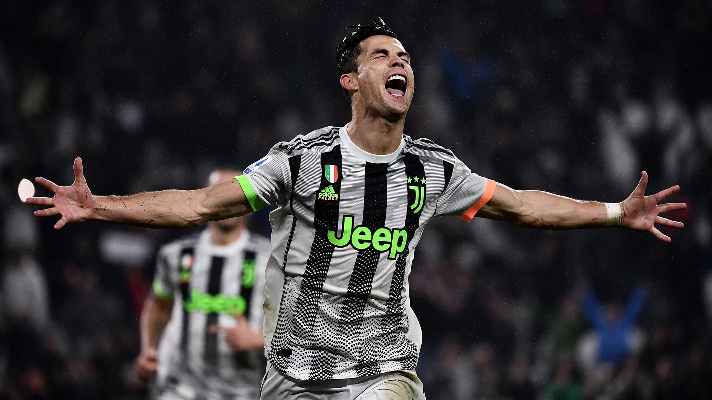

Juventus FC Special Kit
2019

In the heart of Turin, my quest led me to an extraordinary footballing rendezvous, where the historic and the avant-garde converged seamlessly. Navigating the storied streets, my destination was the Juventus Palace, a nexus of culture and sport. Within its walls, I unearthed a footballing gem—a unique collaboration kit between Juventus and the Palace skateboarding brand. The jersey was a visual symphony, blending the iconic black and white stripes with the urban aesthetic of Palace. Donning this distinctive kit, I felt not only a connection to Juventus' storied history but also an embrace of contemporary style and innovation. The matchday experience, amidst the vibrant Turin atmosphere, was heightened by the shared enthusiasm of fans celebrating this fusion of football and street culture. The Juventus Palace collab kit, now a prized possession, is more than a garment; it's a testament to the dynamic spirit of Turin and the ever-evolving tapestry of football fandom, where tradition meets the cutting edge.